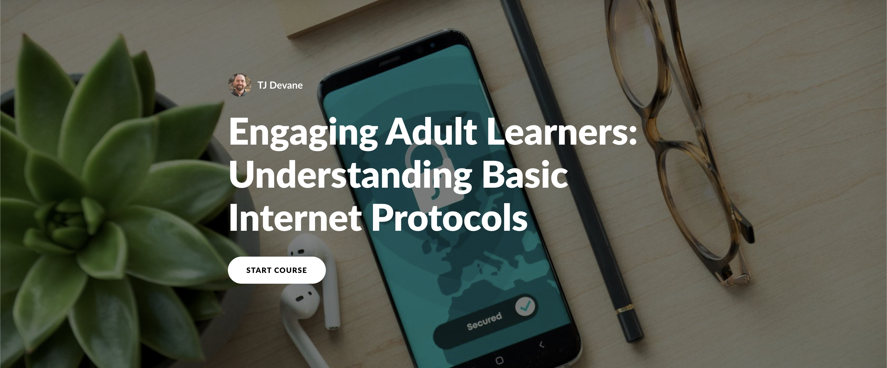

Enablement & Readiness Strategist
TJ Devane
Sales & GTM Enablement | Training, Certification & Readiness Programs | Building Scalable, AI-Augmented Learning Across EdTech and SaaS
Sales & GTM Enablement | Training, Certification & Readiness Programs | Building Scalable, AI-Augmented Learning Across EdTech and SaaS
I started in the classroom teaching math, taught myself to code, and founded a high-school computer science department from the ground up. That path, educator to developer to enablement, is the thread that runs through everything I do. I'm happiest where learning meets technology, translating something genuinely complex into something people can actually use.
Today, at CodeHS, I build the learning systems and enablement programs that help a national K-12 SaaS platform drive adoption and readiness. I work across product, engineering, revenue, and customer-facing teams, redesigning certification programs, launching new cohorts, equipping go-to-market teams to sell, and turning raw subject-matter expertise into clear, scalable learning. My computer science background means I can sit comfortably with engineers and SMEs, then carry what they know back to the people who need it.
I'm genuinely AI-forward in how I work, not as a buzzword but as a daily production habit. I use tools like Claude, custom GPTs, and automation to ship better content faster, and I keep piloting what's new to see what actually earns a place in the workflow. Mostly, I'm driven by curiosity and a bias toward building. I'd rather prototype the thing than write a deck about it.
I hold advanced degrees in Education and Computer Science Education, a B.S. in Mathematics, and recent certifications in Agile, Product Management, and Sales Enablement. The numbers below tell the rest of the story.
I design and scale learning, enablement, and GTM readiness programs for a national K-12 SaaS platform. I redesigned the flagship Teacher Certification Program end to end (curriculum, mock exams, 60+ support videos, and job aids), lifting pass rates 7% across 700+ educators, and launched the first national AP CSA Teacher Cohort in 2025-26, expanding it into a four-cohort PD program the next year spanning AP CSA, AP CSP, Applied AI, and AP Cyber. I serve as a pre-sales SME on sales and renewal calls (contributing to 3x more cohort requests and 2.5x more purchases), led GTM enablement for a new AI product, and built AI-assisted content workflows that cut development time roughly 30% while managing a team of six.
I built CRM and ERP enhancements and internal tooling (HTML, CSS, JavaScript, PHP, MySQL, Bootstrap, jQuery) to organize business and customer communication and streamline global technical service operations. As lead liaison between Engineering and customer-facing teams, I translated complex technical capabilities into clear documentation, job aids, and onboarding materials, managing six service engineers and 50+ daily customer interactions while standardizing CRM workflows to reduce resolution time.
I founded and scaled the computer science department at a new high school of 1,200+ students, growing it from 1.5 to 3 teachers and 8 to 18 courses, and developing AP CS A, AP CS Principles, and cybersecurity curricula. I designed and delivered system-wide professional development on inclusive practices and DEI for 80+ educators, conducted performance gap analyses for 175+ learners, coached all new CS teachers, and ran an original two-week MIT App Inventor summer program for middle-school students.
I delivered student-centered mathematics instruction while contributing to school-wide professional learning. I designed and facilitated annual math and pedagogical professional development for 80+ educators aligned to standards and best practices, coached newly hired teachers through classroom observations and custom resource development, and built academic and behavioral interventions for 30+ at-risk students informed by performance data.

An engaging introduction to Internet Protocols through interactive modules, real-world examples, and knowledge reinforcement quizzes. Designed to strengthen understanding of fundamental networking concepts.
This capstone research explores how applying cognitive multimedia learning principles to video production can significantly enhance student engagement and improve learning outcomes in a flipped classroom environment.
I'm always interested in discussing new opportunities, collaborations, or learning projects. Let's connect and explore how we can work together to create impactful learning experiences.